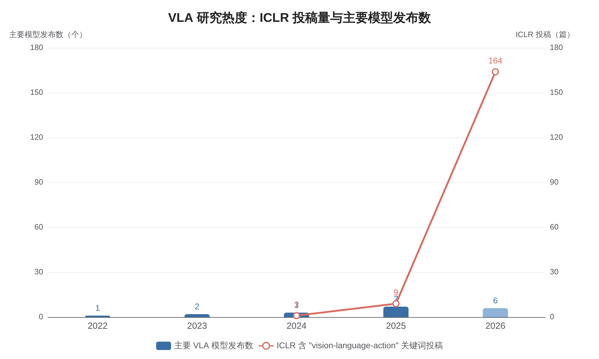
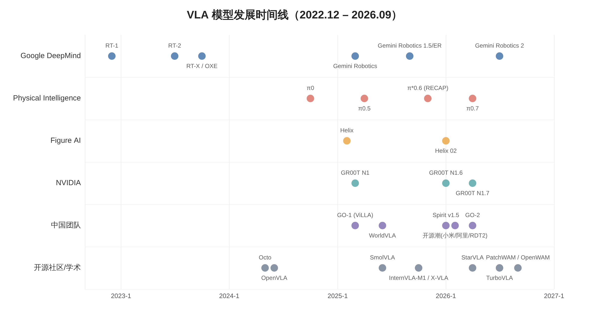
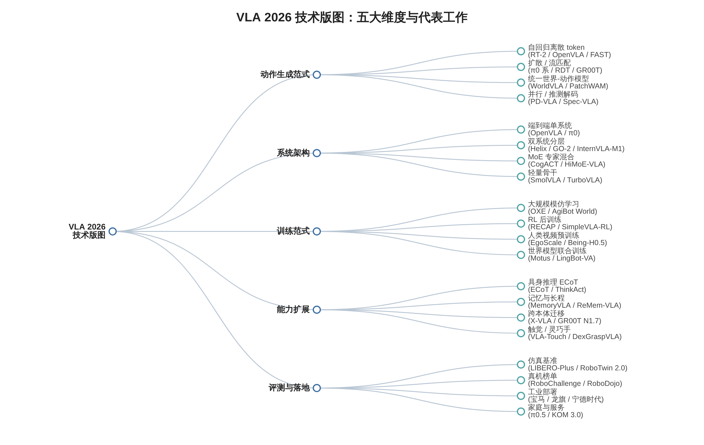
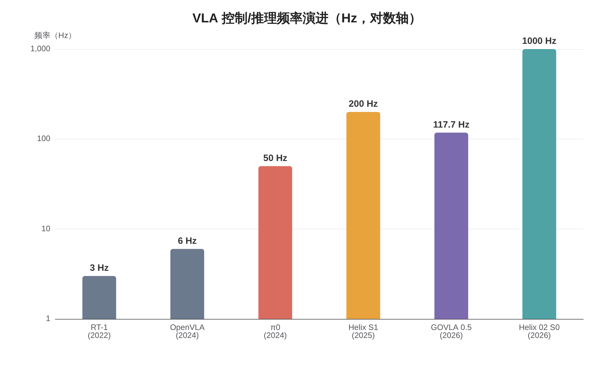
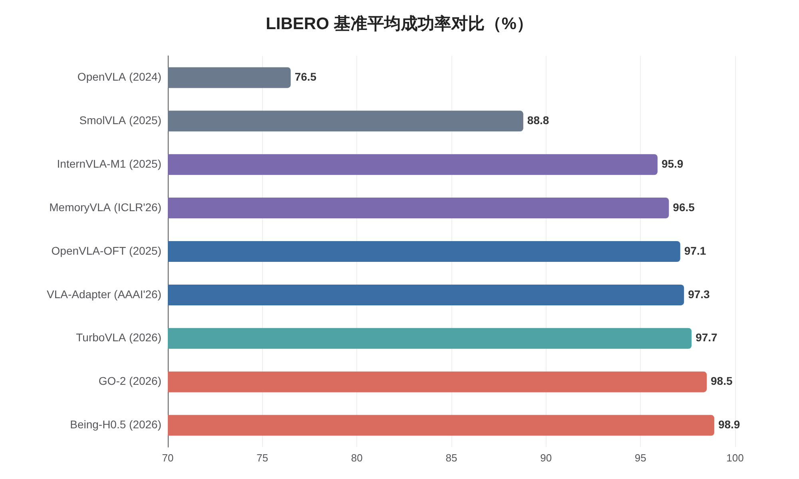
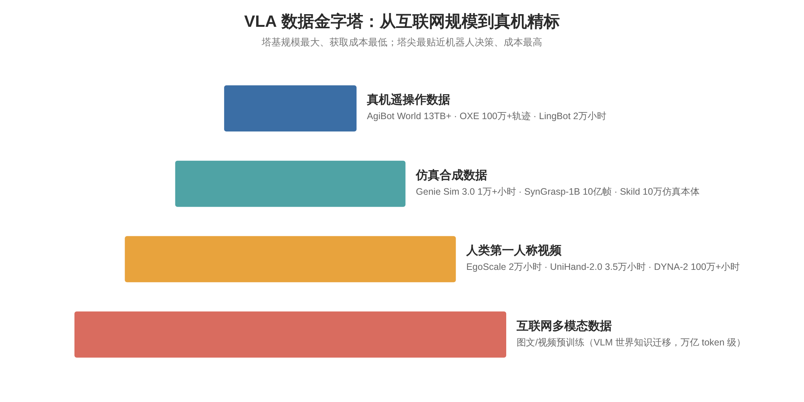
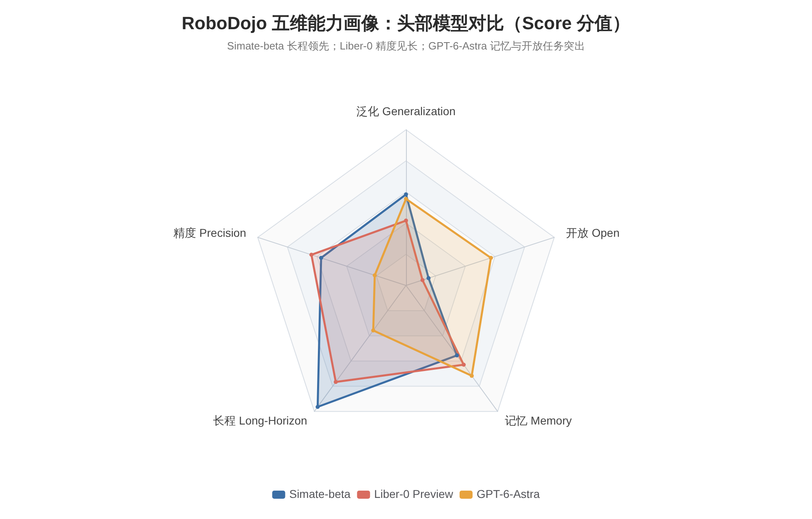
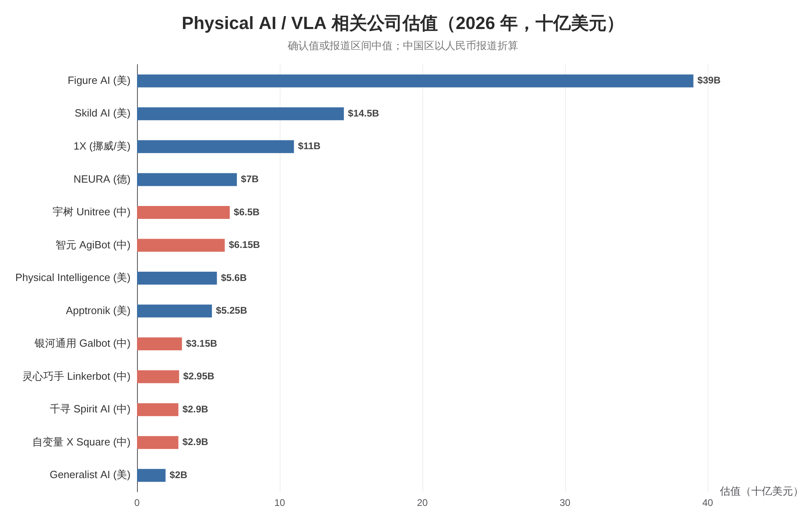

VLA 模型已从 2023 年 RT-2 开创的"视觉-语言模型直接输出动作"设想，演变为 2026 年具身智能领域最主流、竞争最激烈的技术范式。以 ICLR 投稿为晴雨表，含"VLA"关键词的投稿从 2024 年的 1 篇、2025 年的 9 篇暴增至 2026 年的 164 篇，录用论文中约一半来自中国团队（AlmaBetter）。2026 年形成"通用旗舰 + 开源生态 + 世界动作模型"三线并进格局：π0.7 以约 5B 参数定义"可操控通用机器人基础模型"（arXiv）；Gemini Robotics 2 三件套扩展至全身控制与多智能体协作（Google DeepMind）；NVIDIA 预告基于 14B 世界动作模型的 GR00T N2（WCCFTech）。
8—9 月，Skild S1 与 Generalist GEN-1.5 相继展示"单条视频/单次演示即学新任务"的上下文学习能力（Unite.AI，MarkTechPost）；PatchWAM 与 OpenWAM 等 WAM 模型在 RoboDojo 榜单占据头部，Simate-beta 以 33.95 分居首（RoboDojo）。产业层面，Figure 03 完成 200 小时零人工干预分拣、智元 Genie G2 工厂直播成功率 99.5%、Skild 年化收入突破 1 亿美元。本报告核心判断：VLA 并未走向消亡，而是在与世界模型、强化学习、推理记忆机制的深度融合中完成自我重构；未来两年的胜负手在于数据闭环速度、长程可靠性与评测可信性重建。
VLA 范式：定义、技术基础与格局总览
1.1 定义与问题形式化
VLA 模型是一类将视觉观测、语言指令与机器人动作统一建模的策略模型。形式上，给定时刻 t 的多视角图像观测 ot、自然语言任务指令 ℓ 与机器人本体状态 qt，VLA 学习参数化策略 πθ(at | ot, ℓ, qt)，直接输出可执行动作 at（通常为末端位姿增量、关节位置或时序动作块 action chunk）。与经典"感知—规划—控制"流水线不同，VLA 的判别性特征有三：其一，以预训练 VLM 为骨干，继承互联网规模图文数据中的语义知识；其二，端到端可微，从像素到动作无需手工中间表示；其三，语言是一等公民，任务通过开放词汇的自然语言指定，从而具备组合泛化潜力（Ma et al., TNNLS 2026，Pure VLA Survey）。
动作空间的建模是 VLA 区别于 VLM 的本质问题，2026 年主流方案可归为四类。离散 token 自回归：将连续动作分箱或经 FAST 时序压缩 tokenizer 编码为离散符号，由 VLM 自回归解码，代表为 RT-2、OpenVLA 与 π0.5（FAST）。扩散/流匹配连续生成：以 VLM 特征为条件，用扩散 Transformer 或流匹配头去噪生成连续动作块，学习目标可写为向量场回归 L = E‖vθ(xt, t, c) − ut(xt)‖²，代表为 π0、GR00T 与 GO-2（π0）。统一世界-动作生成：动作与未来视觉观测置于同一生成框架，代表为 WorldVLA 与 PatchWAM（arXiv）。隐动作与潜空间方案：从视频中无监督挖掘光流或潜变量作为动作中介，代表为 Motus 与 UniVLA（arXiv）。四条路线在 2026 年并非替代关系，而是在同一模型内组合——π0.7 即同时使用 FAST 式表示、流匹配动作专家与世界模型生成的子目标图像。
1.2 技术谱系：从 RT-1 到 π0 的范式确立
VLA 的直接源头是 Google 的 Robotics Transformer 系列。2022 年 12 月的 RT-1 以 13 万条真机演示训练 Transformer 策略，验证了大规模多任务真机数据的价值，但仅 3Hz 的控制频率与有限的泛化能力使其止步于受控场景（RT-1）。2023 年 7 月的 RT-2 完成关键一跃：将机器人动作表示为文本 token，与视觉-语言数据联合微调 PaLI-X/PaLM-E 级 VLM，使模型涌现出将"灭绝的动物"等网络知识迁移到操作指令上的语义泛化，VLA 范式由此确立（RT-2）。同年 10 月，Google 联合 33 家机构发布 Open X-Embodiment（OXE） 与 RT-X，汇集 22 种本体、100 万+ 轨迹、527 项技能，首次系统性验证跨本体正迁移（RT-X）。
2024 年是开源与高频控制双突破之年。6 月，斯坦福、伯克利等发布 OpenVLA（7B，Llama 2 + DINOv2/SigLIP，97 万条 OXE 轨迹训练），性能超越 RT-2-X 且可在消费级 GPU 微调，成为此后两年学术界事实上的基线（arXiv）。10 月，Physical Intelligence 的 π0 将流匹配动作专家引入 VLA，以 50Hz 输出连续动作块，使叠衣、装盒等双臂灵巧任务首次达到可用水平（π0）。同期 Octo、TinyVLA、DeeR-VLA 等从轻量化与动态推理角度补全早期生态，VLA 技术版图初步成形。
1.3 2026 年格局总览：爆发与分化
2026 年是 VLA 研究热度与工程成熟度双双爆发的年份。学术产出上，ICLR 2026 含"VLA"关键词投稿达 164 篇，较 2025 年增长约 18 倍，约半数录用论文来自中国企业或高校（AlmaBetter）。综述文献在 2025—2026 年密集出现，覆盖动作 token 化（arXiv）、高效化（TPAMI 2026）、数据集与基准（arXiv）、后训练（arXiv）等细分维度，标志领域进入体系化阶段。发布节奏上，2022—2025 年里程碑级 VLA 发布分别为 1、2、3、7 次，而 2026 年前 9 个月即出现 Gemini Robotics 2、π0.7、GO-2、StarVLA、TurboVLA、GEN-1.5、Skild S1、PatchWAM、OpenWAM 等重要发布，行业进入"月月有旗舰"的高密度迭代期。

与学术热度并行的是三条竞争主线的分化。通用旗舰线由 PI、Google、NVIDIA、Figure 主导，追求全任务、全本体的基础模型；开源生态线由 OpenVLA 谱系与中国 2026 年 2 月开源潮主导，争夺开发者与标准；世界动作模型线由 WorldVLA、Motus、PatchWAM、OpenWAM、DreamZero/GR00T N2 与 Dyna 的 DYNA-2 构成，主张以视频世界模型统一动作生成（explainX）。三条主线在 2026 年下半年开始合流：GR00T N2 以 WAM 为基座，π0.7 以世界模型生成子目标，WAM 阵营则吸收 VLA 的动作专家工程经验。

头部实验室深度剖析
2.1 Physical Intelligence：π0.5 → π*0.6 → π0.7
Physical Intelligence（PI）是过去两年 VLA 领域最具影响力的实验室，由 Karol Hausman、Sergey Levine、Chelsea Finn 等机器人学习核心学者创立，累计融资约 11 亿美元，2025 年 11 月 B 轮后确认估值 56 亿美元，2026 年 3 月据报道正以超 110 亿美元估值洽谈新一轮（Teahose）。π0.5（2025 年 4 月）采用约 3.3B 参数（SigLIP 400M + Gemma 2B + 300M 流匹配动作专家），通过 FAST 动作 token 化与异构数据联合训练，首次在完全未见过的真实家庭环境执行"收拾厨房""铺床"等长程开放世界任务（arXiv）。
π*0.6（2025 年 11 月）将重心从"示范模仿"转向"经验强化"：核心方法 RECAP 先用离线 RL 从带价值标注的数据中学习，再经 SFT 蒸馏，最后进入多轮"部署—评估—再训练"在线迭代闭环；标志性设计是把优势值以"Advantage: positive/negative"文本形式作为条件输入。模型升级至 Gemma 3 4B + 860M 动作专家，并以 Knowledge Insulation 防止 RL 破坏 VLM 语义知识；在真实浓缩咖啡吧实现 5:30 至 23:30 连续制作，吞吐量提升一倍以上、失败率减半（arXiv）。π0.7（2026 年 4 月）定位"可操控的通用机器人基础模型"，总规模约 5B：4B VLM 主干 + MEM 风格视频历史编码器 + 860M 动作专家 + 高层语义策略；最突出的创新是上下文条件化——除语言外还可接受 episode 元数据、BAGEL 世界模型生成的子目标图像、观测历史与控制模式等多路上下文（arXiv，terryum.ai）。
2.2 NVIDIA GR00T：N1.5 → N1.6 → N1.7 与 N2 预览
NVIDIA 的 Isaac GR00T 系列走"开放模型 + 全栈平台"路线。GR00T N1（2025 年 3 月）以 Eagle-2 VLM + 扩散 Transformer 双系统架构开源，预训练使用 88 小时真实机器人数据、827 小时神经生成视频与 6,500 小时仿真数据，消耗约 5 万 H100 时（NVIDIA）。N1.6（2026 年 1 月）集成 Cosmos Reason 并扩展至全身控制（NVIDIA Research）。
GR00T N1.7（2026 年 3—4 月，Apache 2.0 早期开放）转向相对末端执行器（EEF）动作空间，引入 EgoScale 预训练范式——利用 2 万小时第一人称人类视频规模化预训练，实证人类视频数据量与下游操作性能的对数线性缩放律，以 Cosmos-Reason2-2B 为骨干（NVIDIA Developer）。GTC 2026 上 NVIDIA 与波士顿动力宣布合作将先进 AI 引入 Atlas（NVIDIA Newsroom）。更具战略意义的是，NVIDIA 已预告 GR00T N2 将于 2026 年底推出预览版——基于 140 亿参数 DreamZero 世界动作模型，内部评测声称成功率较 N1.7 提升 2 倍以上，在 MolmoSpaces 与 RoboArena 内部评测排名第一，显示 NVIDIA 从"扩散 VLA"向"世界动作模型"的明确转向（WCCFTech）。
2.3 Google DeepMind：Gemini Robotics 1.5/ER → Gemini Robotics 2
Google DeepMind 沿"云端大模型 + 端侧小模型"双轨演进。2025 年 3 月首发 Gemini Robotics 与 ER 版（Google DeepMind）；6 月推出延迟低于 10ms 的 On-Device 版；9 月发布 1.5 与 ER 1.5，引入"先思考后行动"的 agentic 框架，ER 负责长程规划、GR 负责执行（Google DeepMind）。
2026 年 7 月 30 日发布的 Gemini Robotics 2 是迄今最完整的机器人模型套件：GR2 为全身 VLA，控制范围"从脚底到指尖"，同时支持灵巧手与夹爪；ER 2 支持分钟级多步任务规划与多机器人团队协作，经 AI Studio 开放；On-Device 2 可在数小时内适配新本体。合作伙伴覆盖 Apptronik、波士顿动力、Agile Robots（Google DeepMind）。配套的 ASIMOV-Agentic 安全报告首次系统评估具身智能体的物理安全风险框架（ASIMOV）。
2.4 Figure AI：Helix 02 三级架构与 Figure 03 商业化
Figure AI 是"整机 + 模型"垂直整合路线的代表，2025 年 9 月 C 轮后估值 390 亿美元，为全球估值最高的人形机器人公司（IPO.club）。Helix 02（2026 年 1 月 27 日）提出当前最激进的实时分层架构：S2（约 7B 语义系统）→ S1（200Hz 全身视觉运动策略）→ S0（仅 1000 万参数、1kHz 的全身运动先验，用 1000+ 小时人类运动数据在 20 万个并行仿真环境中训练）。S0 相当于机器人的"小脑"；Helix 02 驱动 Figure 02 完成含 61 个连续动作的洗碗机装卸演示，全程无遥操作（Figure）。
商业化方面，Figure 03 于 2026 年 5 月宣布完成 200 小时连续包裹分拣、零人工干预，累计交付超 350 台，客户包括宝马斯帕坦堡工厂（24/7 运行）与 Catalyst Brands 物流仓（Figure，Figure）。工程数据显示，物流分拣每包裹处理时间从 6.84 秒降至 4.31 秒，条码识别成功率从 88.2% 提升至 94.4%，获得稳定策略所需训练数据从 10 小时级压缩到 60 小时级。Figure 的路径证明：在结构化场景中，"模型迭代 + 数据回流 + 场景收窄"的工程闭环比单纯扩大模型规模更能兑现商业价值。
2.5 新势力：Skild、Generalist、Dyna、1X 与 Tesla
2026 年下半年，一批"非典型 VLA"公司成为前沿变量。Skild AI（CMU 系，2026 年 1 月获软银领投 14 亿美元 C 轮、估值超 140 亿美元）的 Skild Brain 走"omni-bodied（任意本体）"路线：在 10 万个仿真机器人构型与百万级人类视频上训练双层层级策略，同一权重驱动四足、人形、机械臂与移动操作体；8 月 18 日发布的 S1 将该路线推向上下文学习——输入一段人类操作视频即可执行长达 10 分钟、数十步的新任务，无需梯度更新，从录制演示到自主执行仅 11 分钟（Unite.AI）。Skild 已与 ABB、Universal Robots、MiR 合作部署，2026 年 9 月年化收入突破 1 亿美元、客户超 60 家（Silicon UK，Skild）。
Generalist AI 于 2026 年 8 月 19 日发布 GEN-1.5，提出"physical prompting（物理提示）"：将 3—12 秒的传感-运动演示放入 30 秒上下文窗口，无需微调即尝试新任务，10 个任务一次性成功率 59%，若在 5 分钟数据上做 10 步梯度更新则提升至 83%；官方强调该能力从 8 个月连续物理交互预训练中"涌现"（MarkTechPost）。Dyna Robotics 的 DYNA-2（8 月 10 日）是 WAM 激进版本：完全不用机器人数据，在 100 万+ 小时第一人称人类视频上预训练，并声称观察到机器人操作的缩放律（explainX）。此外，1X 的 NEO 家庭机器人搭载 Redwood 模型推进家庭场景（估值约 100—120 亿美元）（NewMarketPitch）；Tesla Optimus V3 确认采用 VLA 架构 + Grok 语言交互 + AI5 芯片，依托约 300 台机队进行车队学习（optimusk.blog）。这批公司的共同信号是：上下文学习与零样本任务获取正在取代"每任务微调"，成为基础模型竞争的新焦点。
| 模型 | 发布方 / 时间 | 规模与架构 | 动作生成 | 代表性成果 |
|---|---|---|---|---|
| RT-2 | Google DeepMind, 2023.07（论文） | PaLI-X/PaLM-E 级 VLM | 离散动作 token | 确立 VLA 范式 |
| OpenVLA | Stanford 等, 2024.06（论文） | 7B，Llama 2 + DINOv2/SigLIP | 离散 token | 首个高性能开源 VLA |
| π0 | PI, 2024.10（博客） | ~3B，PaliGemma + 动作专家 | 流匹配，50Hz | 双臂灵巧操作里程碑 |
| π0.5 | PI, 2025.04（论文） | 3.3B，Gemma 2B + 300M 专家 | FAST token + 流匹配 | 开放世界家庭泛化 |
| π*0.6 (RECAP) | PI, 2025.11（论文） | Gemma 3 4B + 860M 专家 | 优势条件化 + 流匹配 | 咖啡吧 18h 连续作业 |
| π0.7 | PI, 2026.04（论文） | ~5B：4B VLM + 视频历史编码器 + 860M 专家 | 上下文条件化流匹配 | 可操控通用基础模型 |
| GR00T N1.7 | NVIDIA, 2026.03（页面） | Cosmos-Reason2-2B 双系统 | 扩散动作，相对 EEF | 2 万小时人类视频预训练 |
| GR00T N2（预览） | NVIDIA, 2026 年底（报道） | 基于 DreamZero 14B WAM | 世界动作模型 | 内部评测成功率 2× N1.7 |
| Gemini Robotics 2 | Google DeepMind, 2026.07（博客） | GR2 + ER2 + On-Device 2 三件套 | 全身 VLA | 全身控制 + 多机协作 |
| Helix 02 | Figure, 2026.01（博客） | S2 7B + S1 200Hz + S0 1kHz | 三级分层 | 61 动作洗碗机演示 |
| Skild S1 | Skild AI, 2026.08（报道） | omni-bodied 双层层级 | 视频上下文学习 | 单视频学 10 分钟长任务 |
| GEN-1.5 | Generalist AI, 2026.08（报道） | 具身基础模型，30s 上下文 | physical prompting | 单演示 59% / 10 步梯度 83% |
| DYNA-2 | Dyna Robotics, 2026.08（报道） | 世界动作模型 | 纯人类视频预训练 | 100 万+ 小时视频，零机器人数据 |
| GO-2 | 智元机器人, 2026.04（论文） | 异步双系统 + 动作 CoT | 异步推理 + 扩散 | LIBERO 98.5%，VLABench 47.4 |
中国力量全景：从跟跑到开源引领
3.1 智元机器人：GO-2、Genie 系列与数据基建
智元机器人（AgiBot）是中国 VLA 领域布局最完整的公司，由前华为"天才少年"彭志辉于 2023 年创立，三年完成 11 轮融资，2025 年出货 5,168 台、全球市占率约 39%，估值约 55—68 亿美元（中国经济新闻网，NewMarketPitch）。模型侧，GO-2（2026 年 4 月）采用异步双系统架构与动作思维链：慢系统异步进行语义推理、快系统不间断输出动作，从机制上解决大模型推理延迟与高频控制的矛盾。GO-2 在 LIBERO 取得 98.5%、LIBERO-Plus 零样本 86.6%、VLABench 47.4 分，并借助 Genie Sim 3.0 实现 82.9% 的 sim-to-real 迁移成功率（arXiv）。
基建侧，智元构建"数据—世界模型—仿真"三位一体闭环：世界模型系统 Genie Envisioner（GE-2 登顶 World Arena）；仿真平台 Genie Sim 3.0（CES 2026 发布，1 万+ 小时合成数据、200+ 任务、10 万+ 场景，LLM 驱动场景生成并与 Isaac Sim 集成）（AgiBot）；数据集 AgiBot World 2026 从 9.36TB 扩展至 13TB+、覆盖 217 个任务（OpenDriveLab）。落地侧，Genie G2 在龙旗科技工厂完成 8 小时连续直播作业，成功率 99.5%、节拍 18—20 秒（OFweek）。
3.2 2026 年 2 月开源潮：生态卡位战
2026 年 1 月底至 2 月中旬，中国团队在三周内密集开源了一批高质量 VLA 模型：1 月 29 日宇树开源 UnifoLM-VLA-0（GitHub）；1 月 30 日蚂蚁集团开源 LingBot-VA；2 月 1 日优必选开源 Thinker；2 月 4 日 RDT2 发布，主打未见本体零样本泛化（项目页）；2 月 10 日阿里达摩院开源 RynnBrain——16 项具身基准 SOTA、超越 Gemini ER 1.5，旗舰版为 30B-A3B 的 MoE 结构（GitHub）；同日原力灵机开源 DM0；2 月 12 日小米开源 Xiaomi-Robotics-0（4.7B）（GitHub）。
开源潮在下半年持续深化：7 月小米发布 Xiaomi-Robotics-1（arXiv），在 RoboDojo 榜单位列第 7（20.07 分），为开源模型最高位次（RoboDojo）；蚂蚁 LingBot-VLA 以约 2 万小时遥操作数据、9 种双臂构型训练（arXiv）；原力灵机迭代至 DM0.5（RoboDojo 第 5，24.90 分）。这波开源的战略意义在于：中国团队通过开放权重快速占领开发者生态，使 Qwen、Wan 等国产基座成为继 Llama 之后 VLA 研究的新默认选项，并以 RoboChallenge、RoboDojo 等本土评测体系争夺标准制定权。
3.3 创业公司群像：模型派与数据派
模型派中，智平方（AI²Robotics）的 GOVLA 0.5 / FiS-VLA 通过快慢系统融合实现 117.7Hz 控制频率，性能据称超越 π0 约 30%（智平方）；千寻智能（Spirit AI）的 Spirit v1.5 是首个在公开真机评测中超越 π0.5 的中国开源模型，RoboChallenge Table30 取得 66.09 分 / 50.33% 成功率（Spirit AI），后续 Spirit v1.6 曾登顶 RoboArena 但因评测规范争议被下架（量子位）；自变量机器人（X Square）从 WALL-A 演进至 WALL-B（World Unified Model），开源的 WALL-OSS 曾在 RoboChallenge 位列全球第二、超越 π0（X Square）；星海图的 GalaxeaVLA（G0.5）以 20.23 分位居 RoboDojo 第 6。
数据派中，银河通用（Galbot）是仿真合成数据路线的旗手：GraspVLA 用 10 亿帧合成抓取数据（SynGrasp-1B）训练，真机抓取成功率约 95%；双臂 50 公斤负载的 Galbot S1 已在宁德时代电池工厂常态化作业。银河通用 2026 年 3 月完成 25 亿元新融资、累计超 50 亿元，投资方包括国家人工智能产业投资基金、中国石化等"国家队"（中国经济新闻网，澎湃）。大厂方面，腾讯 Robotics X 的 Hy-Embodied-0.5-VLA（RoboDojo 第 10）、美团 Meituan-Robotics-0（第 9）、华为与华科合作的 TurboVLA 均已进入榜单或论文序列，显示中国科技巨头已全面入场（RoboDojo）。
3.4 学术框架：框架化与跨本体
上海 AI Lab 的 InternVLA-M1（4.1B = Qwen2.5-VL-3B + 86M DiT + DINOv2）提出空间引导两阶段训练，LIBERO 达 95.9%、SimplerEnv Google Robot 视觉-动作匹配 80.7%，可在单张 RTX 4090 复现（arXiv）。StarVLA 提出"乐高式"框架：Qwen-VL、Cosmos 等骨干与 FAST、OFT、π0、GR00T 等动作头自由组合，并在 LIBERO、SimplerEnv、RoboTwin 2.0、RoboCasa-GR1、BEHAVIOR-1K 五大基准统一评测，成为学术复现首选脚手架（arXiv）。
跨本体方向上，X-VLA（ICLR 2026）以软提示实现单模型适配多本体（arXiv）；Being-H0.5 基于 UniHand-2.0（3.5 万+ 小时、30 种本体）提出统一动作空间与 Mixture-of-Flow 动作头，LIBERO 达 98.9%、RoboCasa 53.9%，在 5 个真实平台验证（arXiv）。Qwen 系的 Qwen-VLA、Qwen-RobotManip 与提出"动作流形"的 ABot-M0 进一步巩固国产基座的中心地位。整体看，中国学术生态已从"复现改进 OpenVLA"升级为"自出框架、自出基准、自出基座"的全栈输出。
核心技术主线深度解析
2026 年的 VLA 技术版图可按八个维度梳理：动作表示与生成范式、系统架构、世界模型融合、RL 后训练、推理与记忆、高效化、跨本体与触觉、全身控制。

4.1 动作表示与生成范式
动作表示是 VLA 的核心设计变量，直接决定精度、频率与数据效率。自回归离散 token 路线将动作经 FAST tokenizer（基于 DCT 时序压缩）编码为离散符号，优势是完全复用 LLM 基建、训练稳定，劣势是高频动作序列的解码延迟；π0.5 证明经 FAST 压缩后该路线可支撑开放世界任务（FAST）。扩散/流匹配路线以 VLM 特征为条件生成连续动作块，采样步数少、频率高，是 π0 系、GR00T、GO-2 的共同选择。DexVLA（CoRL 2025）进一步证明动作专家可以做大：为 Qwen2-VL 2B 外挂约 1B 参数的 ScaleDP 扩散专家，经三阶段课程训练，在叠衬衫（0.92）等灵巧任务上大幅超越 Octo 与 OpenVLA（arXiv）。
2026 年的新变量是两条"第三条道路"。其一是统一世界-动作生成：WorldVLA 用动作注意力掩码在 Chameleon 自回归框架内统一视频与动作（arXiv），PatchWAM 更激进地以固定编解码器把动作当作图像 patch 生成、完全取消可训练动作专家（arXiv）。其二是并行与推测解码：Spec-VLA 以松弛接受率的推测解码加速自回归（EMNLP 2025），Discrete Diffusion VLA（ICML 2026）把离散扩散引入动作解码实现并行生成，KERV 用运动学约束校正推测采样（Efficient VLA Survey）。动作表示的竞争远未收敛，但"高频、连续、可并行"已是共同演进方向。
4.2 系统架构：端到端、双系统与三级分层
端到端单系统（OpenVLA、π0.5）胜在简单与知识共享，但大模型推理延迟制约控制频率；双系统分层（GR00T、Helix S1/S2、GO-2 异步双系统）让慢系统负责语义推理、快系统负责高频动作，成为 2025—2026 年工业界主流；三级分层（Helix 02 的 S2→S1→S0）进一步叠加 1kHz 运动先验，把"小脑"也纳入学习框架（Figure）。异步化是双系统走向实用的关键工程：GO-2 的异步推理与 SmolVLA 的 async inference（减少约 30% 任务时间）表明，解耦"想的频率"与"动的频率"比单纯加速推理更有效（Hugging Face）。
控制频率的跃升是架构演进最直观的度量：RT-1 仅 3Hz，OpenVLA 约 6Hz，π0 借流匹配动作块达 50Hz，Helix S1 达 200Hz，Helix 02 S0 达 1kHz——两年提升两个数量级，VLA 从"慢速规划器"进化为可承担全身动态控制的实时系统。与频率并行的是 MoE 化（RynnBrain 30B-A3B、Being-H0.5 的 Mixture-of-Flow）与骨干多元化（Qwen2.5-VL、Cosmos-Reason2、Gemma 3 并存），架构创新正从"有没有分层"转向"层间如何通信、专家如何路由"。

4.3 世界模型融合：从 VLA 到 WAM
2026 年最具范式冲击力的争论是"VLA vs WAM"。NVIDIA 首席科学家 Jim Fan 在 2026 年 5 月公开宣称"参加 VLA 的葬礼"，主张未来属于将动作生成统一进视频世界模型的 WAM（Embodied AI and Robotics）；RSS 2026 的会场共识也指向"从输出动作转向理解动作如何改变世界"（Analytics Intelligence）。复旦与 NUS 的综述将 WAM 定义为"以世界模型为骨干、动作生成为内在能力"的新范式（arXiv）。核心论据是：经典 VLA 把动作当作输出标签，缺乏对动作后果的显式建模；WAM 通过预测"动作如何改变世界"内生地生成动作，从而获得规划与反事实推理能力。
WAM 阵营在 2026 年密集产出：阿里 WorldVLA（arXiv）；Motus（CVPR 2026）以光流隐动作与六层数据金字塔训练，仿真较 X-VLA 提升 15%、真机提升 11%—48%（arXiv）；蚂蚁 LingBot-VA 将 Wan 2.2-5B 改造为 MoT 结构；NVIDIA DreamZero（Wan 14B）成为 GR00T N2 基座；Dyna 的 DYNA-2 用 100 万+ 小时纯人类视频预训练。9 月更是丰收月：PatchWAM（9 月 22 日）提出"Action-as-Patch"固定编解码器、取消可训练动作专家，RoboTwin 2.0 以 88.0% 对 78.4% 击败双专家基线，LIBERO-Plus 达 91.8%，以 RoboDojo 总分 29.39 登顶（截至 9 月 15 日）（arXiv）；OpenWAM（9 月 9 日）开放模块化 WAM 技术栈与 6,400 小时预训练，OpenWAM-α 在 RoboDojo 得分 17.18、位列第 8（alphaXiv，RoboDojo）。
客观地看，"VLA 已死"是修辞而非事实：9 月 RoboDojo 榜首 Simate-beta 与多数头部模型仍是改良版 VLA 架构，WAM 在真机部署上尚无 Figure/智元级别的案例。更准确的判断是融合：π0.7 用世界模型生成子目标图像作为上下文，GR00T N2 以 WAM 为基座但保留动作专家工程。两条路线的本质分歧——"动作是输出"还是"动作是世界演化的一部分"——将在 GR00T N2 与下一代 π 模型的真机对决中得到检验。
| 维度 | 经典 VLA（π0.7、GO-2、GR00T N1.7） | 世界动作模型（PatchWAM、OpenWAM、DreamZero、DYNA-2） |
|---|---|---|
| 核心机制 | VLM 感知 + 动作专家生成（arXiv） | 视频预测与动作生成统一（arXiv） |
| 动作表示 | 离散 token / 流匹配连续动作 | Action-as-Patch / 隐动作 / 统一 token |
| 数据利用 | 真机 + 仿真 + 人类视频（条件化输入） | 海量无标注视频直接监督（DYNA-2 达 100 万+ 小时） |
| 推理规划 | 依赖外部 CoT / 记忆模块 | 世界模型内生预测，天然支持规划与反事实 |
| 成熟度 | 已规模部署（Figure、智元、宁德时代、Skild） | 榜单领先，真机部署案例尚少 |
| 代表瓶颈 | 分布外脆弱、缺乏动作后果建模 | 计算成本高、视频幻觉、控制精度待证 |
4.4 RL 后训练：从模仿学习到优势条件化
纯模仿学习的天花板（分布外脆弱、无法超越示范、误差累积）使 RL 后训练成为 2025—2026 年核心议题。PI 的 RECAP 代表工业界答案：离线 RL（价值标注 + 优势条件化文本输入）→ SFT 蒸馏 → 迭代在线闭环，并以 Knowledge Insulation 保护 VLM 知识（arXiv）。学术界沿算法维度展开：SimpleVLA-RL（ICLR 2026）基于 PRIME-RL 在 OpenVLA-OFT 上实现在线 RL（arXiv）；RLinf-VLA（RSS 2026）系统比较 PPO、GRPO、DSRL 并支持 LoRA 高效微调（arXiv）；GRAPE 的轨迹级偏好优化在域内与未见任务分别提升 51.79% 与 58.20%（arXiv）。
整体趋势是：VLA 训练流程正从"预训练 + SFT"两段式，演变为"预训练 → SFT → 偏好/RL 后训练 → 部署回流"的多段闭环，与大语言模型的后训练体系日益同构。后训练综述（arXiv）将其与人类运动学习类比：示范模仿对应"观察学习"，RL 对应"练习强化"，世界模型虚拟环境对应"心理演练"——三类机制的配比将成为下一代训练配方的核心。
| 方法 | 时间/出处 | 算法类型 | 关键机制 | 代表结果 |
|---|---|---|---|---|
| RECAP (π*0.6) | PI, 2025.11（论文） | 离线 RL + 在线迭代 | 优势条件化、Knowledge Insulation | 咖啡吧 18h 连续，吞吐 2× |
| SimpleVLA-RL | ICLR 2026（论文） | 在线 RL | PRIME-RL 框架，数据高效 | OpenVLA-OFT 大幅提升 |
| RLinf-VLA | RSS 2026（论文） | PPO/GRPO/DSRL | 统一框架 + LoRA | 系统基准对比 |
| GRAPE | 2024.11（论文） | 轨迹偏好优化 | TPO 轨迹级偏好 | 域内 +51.79%，未见 +58.20% |
| ConRFT | RSS 2025（列表） | 一致性策略 RL | 离线+在线混合 | 真机微调高效 |
| RIPT-VLA | 2025（列表） | 交互式后训练 | 拒绝采样 + RL | 少示范适配 |
| HiRoC | 2026.03（论文） | 层次化后训练 | 高低层分开优化 | 长程任务提升 |
| World-Env | 2025（列表） | 世界模型虚拟环境 | 以 WAM 替代真实交互 | 降低在线 RL 成本 |
4.5 推理与记忆：ECoT 谱系与 MemoryVLA
让 VLA"边想边做"是提升长程与泛化能力的主线。2024 年的 ECoT 首次让模型在输出动作前生成推理链（arXiv）；2025 年 CoT-VLA（CVPR 2025）引入视觉子目标，ThinkAct（NeurIPS 2025）用动作对齐 RL 与视觉隐空间规划（arXiv）；MolmoAct 引入深度感知 token（arXiv）。2026 年重点是推理效率与隐式化：Fast-ThinkAct（CVPR 2026）将推理延迟降低 89.3%（arXiv），Fast ECoT 思维复用实现 7.5 倍加速，ERVLA 以选择策略 + 流监督简化推理结构，RD-VLA 用隐空间循环深度推理替代显式文本链。
记忆机制解决长程任务的状态追踪。MemoryVLA（ICLR 2026）提出感知-认知记忆库，SimplerEnv-Bridge 达 71.9%（+14.6）、LIBERO-5 达 96.5%、真机 84%，长程任务较 CogACT 提升 26 个百分点（arXiv）；RoboDojo 新军 SimpleMemVLA（9 月 21 日上榜）主打记忆增强的简洁设计（RoboDojo）。π0.7 的视频历史编码器（MEM）标志记忆机制进入旗舰模型——历史观测作为上下文条件直接调制动作生成（terryum.ai）。
| 方法 | 时间/出处 | 核心机制 | 代表结果 |
|---|---|---|---|
| ECoT | 2024.07（论文） | 具身思维链 | 推理先于动作的开山之作 |
| CoT-VLA | CVPR 2025 | 视觉子目标 | 长程操作提升 |
| ThinkAct | NeurIPS 2025（论文） | 动作对齐 RL + 视觉隐规划 | 少样本适配 SOTA |
| MolmoAct | 2025.08（论文） | 深度感知 token + ARM | 3D 空间推理 |
| Fast-ThinkAct | CVPR 2026（论文） | 推理蒸馏 | 延迟降 89.3% |
| MemoryVLA | ICLR 2026（论文） | 感知-认知记忆库 | 长程 +26，真机 84% |
| RD-VLA | 2026.02 | 隐空间循环深度推理 | 无文本链推理 |
| ERVLA | 2026.06 | 选择策略 + 流监督 | 推理-动作统一 |
4.6 高效化与轻量化
随着 VLA 走向部署，效率成为硬约束，并已形成专门综述体系（TPAMI 2026 高效 VLA 综述）。小模型路线的 2026 年标杆是 TurboVLA（华科 + 华为）：仅 0.2B 参数在 RTX 4090 上实现 32Hz 推理（显存 <1GB、延迟 31ms），LIBERO 达 97.7%，关键创新是以视觉-语言双向交互替代 LLM 自回归解码（arXiv）。其他代表：VLA-Adapter（1.5B，97.3%，AAAI 2026）（arXiv）、Evo-1（0.8B，94.8%，CVPR 2026）（arXiv）、DreamVLA（0.7B，92.6%）（arXiv）、SmolVLA（约 450M—2.3B，88.8%）（arXiv）。
压缩与加速技术已形成完整工具箱：量化（BitVLA 1-bit、QVLA、QuantVLA、DyQ-VLA）；剪枝与层跳过（MoLe-VLA、DySL-VLA、SpecPrune-VLA、DeeR-VLA）；token 优化（VLA-Cache、CogVLA、Compressor-VLA）；推测与并行解码（Spec-VLA、KERV、Discrete Diffusion VLA）（Efficient VLA Survey）。LIBERO 基准的演进最能说明整体进步：OpenVLA 初代 76.5%，OpenVLA-OFT 优化后达 97.1% 且吞吐提升 26 倍（arXiv），2026 年 Being-H0.5 达 98.9%——基准趋于饱和，直接引出第六章的"基准危机"。

4.7 跨本体、灵巧手与触觉
跨本体是 VLA 规模化的前提，技术路径有三：动作空间对齐——GR00T N1.7 的相对 EEF 空间、Being-H0.5 的统一动作空间、RDT2 的本体无关表示；条件化适配——X-VLA 的软提示、DexVLA 的本体课程；数据驱动涌现——Skild 在 10 万仿真构型上训练出无需适配的 omni-bodied 策略，甚至能补偿训练外的"断肢"损伤（The Dynamics）。灵巧手方向，DexVLA 的倒水与叠衣、Gemini Robotics 2 的"手与夹爪通吃"、Generalist 的"千手"末端执行器迁移标志着 VLA 从夹爪走向多指灵巧操作（Generalist）。
触觉是 2026 年补上的关键模态。帕西尼（PaXini）构建"触觉传感器—灵巧手—人形机器人"全栈：6D 霍尔阵列触觉芯片 FUSE、柔性传感器全球份额约 40%；8 月发布全球首款足底多维触觉传感器 PX-FOOTRIX 与五指数采手套 PXCap Pro（一次采集、多机复用），并训练融合视觉-触觉-语言的 OmniVTLA 模型与 OmniSharing DB 全模态数据集；公司已于 9 月 20 日办理 IPO 辅导备案，冲刺"触觉感知第一股"（深圳新闻网，搜狐）。学术侧，CompliantVLA-Adaptor 用 VLM 引导变阻抗动作实现安全接触作业（arXiv）——触觉与接触富集任务正成为 VLA 的下一个能力 frontier。
4.8 全身控制与移动操作
VLA 的疆域正从桌面双臂扩展到全身与移动操作。全身控制的三条代表路径：Helix 02 的 S0 运动先验（1kHz、1000+ 小时人类运动数据、20 万并行仿真环境）（Figure）；Gemini Robotics 2 的"从脚底到指尖"统一策略；以及 MotionWAM 等将世界动作模型用于人形实时运动-操作一体化的尝试（Efficient VLA Survey）。Humanoid-VLA、Humanup 等工作则探索人形通用控制的视觉整合。
移动操作把导航与操作统一进同一策略：银河通用 NavFoM、TrackVLA 面向动态场景的目标追踪与导航，MoManipVLA 实现通用移动操作迁移，Tic-VLA 面向动态环境的"边控边想"导航（arXiv）。Skild 的双层层级（高层低频规划 + 低层高频控制）同时覆盖行走、爬梯与操作，是"一个大脑管全身"的工业样本（hybridelectronics）。全身化与移动化共同推高了 VLA 的输出维度与稳定性要求，也解释了为何运动先验、世界模型与触觉在 2026 年同时升温。
数据体系：金字塔、数据集与数据引擎
5.1 数据金字塔：四层结构与配比艺术
VLA 的数据体系在 2026 年形成清晰的四层金字塔：塔基是互联网多模态数据（赋予 VLM 世界知识），其上是人类第一人称视频，再上是仿真合成数据，塔尖是真机遥操作数据。层间规模相差数个数量级，成本则反向分布——真机遥操作每小时成本可达数百美元，而人类视频与仿真近乎无限供给。2026 年最重要的范式突破发生在"人类视频"层：NVIDIA EgoScale 用 2 万小时第一人称视频预训练并验证对数线性缩放律（NVIDIA Developer）；Being-H0.5 的 UniHand-2.0 汇集 3.5 万+ 小时、30 种本体（arXiv）；Dyna 的 DYNA-2 更将纯人类视频预训练推到 100 万+ 小时（explainX）。

数据竞争的焦点已从"有没有"转向"配比、课程与闭环"。π*0.6 的部署回流数据、GO-2 的仿真-真机混合配方（82.9% sim-to-real）、Skild 的"仿真预训练 + 视频知识 + 部署微调"三段式，都表明数据工程已成为模型能力的决定性变量（arXiv，Sacra）。Real2Render2Real、ReBot 等 real-to-sim-to-real 视频合成技术，以及 MimicGen 式的自动演示扩增，则进一步模糊了真机与合成的边界（Efficient VLA Survey）。
| 数据集 | 发布方/时间 | 规模 | 类型 | 特点 |
|---|---|---|---|---|
| Open X-Embodiment | Google 等 33 机构, 2023.10（项目） | 100万+ 轨迹, 22 本体, 527 技能 | 真机 | 跨本体公共基石 |
| DROID | Stanford 等, 2024 | 7.6万轨迹, 564 场景 | 真机 | 分布广、场景多样 |
| Bridge V2 | UC Berkeley, 2023（论文） | 6万+ 轨迹 | 真机 | 低成本臂，学术标配 |
| AgiBot World 2026 | 智元, 2026.04（博客） | 13TB+, 217 任务 | 真机 | 全球最大真机操作集之一 |
| LingBot-VLA 数据 | 蚂蚁, 2026.01（论文） | ~2万小时, 9 种双臂构型 | 真机 | 双臂操作基线 |
| EgoScale | NVIDIA, 2026.03（博客） | 2万小时 | 人类视频 | 对数线性缩放律 |
| UniHand-2.0 | Being, 2026.01（论文） | 3.5万+小时, 30 本体 | 人类视频+真机 | 统一动作空间 |
| SynGrasp-1B | 银河通用, 2025（页面） | 10亿帧 | 仿真合成 | 抓取专用，95% 真机成功率 |
| Genie Sim 3.0 | 智元, 2026.01（页面） | 1万+小时, 200+任务, 10万+场景 | 仿真合成 | LLM 场景生成，Isaac 集成 |
| DYNA-2 预训练 | Dyna, 2026.08（报道） | 100万+小时 | 人类视频 | 零机器人数据 WAM |
5.3 数据引擎与仿真平台
仿真平台已从"物理引擎"进化为"数据引擎"。智元 Genie Sim 3.0 支持 LLM 驱动的场景生成并与 Isaac Sim 集成，官方口径 sim-to-real 达 82.9%（AgiBot）；NVIDIA Isaac Lab + Cosmos Transfer 支撑 Skild 10 万构型并行训练，号称"每几天产生千年经验"（AgentMarketCap）；银河通用以全合成路线验证"零真机预训练"的可行性。世界模型作为"神经仿真器"是 2026 年的新增量：Genie Envisioner、DreamZero、World-Env 等可以生成动作后果的视频预测，为 RL 后训练提供低成本虚拟环境——这一"神经仿真"路线若成熟，将同时改写数据与评测的底层逻辑。
数据侧还有两个值得注意的趋势。其一是采集基建化：帕西尼 PXCap Pro 手套把人的操作直接转成可复用训练数据（"一次采集、多机复用"），瞄准硬件快速迭代下的数据沉没成本问题（新浪）。其二是评测数据集化：AgiBot World、OXE 等同时承担训练与评测双重角色，数据发布本身成为生态卡位手段。
评测体系与"基准危机"
6.1 仿真基准的演进与饱和
VLA 评测经历了五代演进：第一代单任务成功率（ACT 时代）；第二代多任务套件（LIBERO、CALVIN、SimplerEnv）；第三代组合泛化（RoboCasa、RoboTwin）；第四代长程与语言 grounding（VLABench、LIBERO-5）；第五代诊断与扰动基准（LIBERO-Plus、Colosseum、RoboDojo）。到 2026 年，LIBERO 头部模型已超 98%、CALVIN 接近满分，经典基准失去区分度。
| 基准 | 时间 | 任务规模 | 评测重点 | 现状 |
|---|---|---|---|---|
| LIBERO | 2023（论文） | 130 任务 | 知识迁移 | 已饱和（>98%） |
| CALVIN | 2022 | 34 任务长程链 | 语言条件长程 | 已饱和 |
| SimplerEnv | 2024（论文） | 真机镜像仿真 | sim-real 相关性 | 仍常用 |
| VLABench | 2024.12（论文） | 100 任务 | 长程推理 | 头部 47.4 分 |
| LIBERO-Plus | 2025.10（论文） | 10,030 任务 | 7 类扰动鲁棒性 | 诊断主力 |
| RoboTwin 2.0 | 2025 | 双臂 50 任务 | 双臂 + 域随机化 | WAM 评测首选 |
| RoboDojo | 2026.07（论文） | 42 仿真 + 18 真机 | 五维能力 | 当前最综合 |
| LIBERO-X | 2026.02（引用） | 鲁棒性 litmus | 分布外 | 新兴 |
6.2 基准审计：高分低能的实证
2026 年 VLA 评测遭遇可信性危机。一项基准审计研究（arXiv 2606.04233）发现：LIBERO/CALVIN 无法诊断真实能力缺陷——一个仅 0.09B 参数、完全不看语言指令的探针模型竟能逼近 SOTA，说明基准高分可能来自视觉捷径而非语言理解（arXiv）。这一结果在社区引发震动：如果语言条件可以被绕过，那么"VLA 的 L 到底起多大作用"就成了必须正面回答的问题。
危机催生了诊断型基准建设。LIBERO-Plus 将任务扩至 10,030 个并引入光照、纹理、相机位姿、初始状态等 7 类扰动因子（arXiv）；LIBERO-PRO、Colosseum、VLA-Arena（开源评测框架）（arXiv）、RMBench、BiCoord、RoboEval、RoboCerebra 分别针对组合泛化、空间推理、长程规划等维度；VATest 从软件工程视角系统化测试 VLA 的失效模式（ACM FSE）。真机侧，RoboChallenge Table30、RoboArena 众包对弈、低成本复现平台 VLA-REPLICA（约 1,050 美元）与柔性物体基准 FolDeX 构成多层评测网；Spirit v1.6 因评测不规范被 RoboArena 下架的事件，推动各榜单加强提交审核与复现要求（量子位）。
6.3 RoboDojo：2026 年 9 月的综合榜单
RoboDojo（2026 年 7 月发布）是当前覆盖最广的 VLA 综合评测：42 个仿真任务 + 18 个真机任务，按泛化、精度、长程、记忆、开放五个能力维度评分（arXiv）。截至 2026 年 9 月 24 日，仿真榜共 48 个模型（RoboDojo Leaderboard）。五维画像显示头部模型能力结构差异显著：Simate-beta 以长程见长，Liber-0 系列精度突出，GPT-6-Astra 在记忆与开放任务上独树一帜——RoboDojo 的价值正在于把"单一成功率"解构为可诊断的能力光谱。
| 排名 | 模型 | 贡献方 | 总分/成功率 | 五维特征 |
|---|---|---|---|---|
| 1 | Simate-beta | Simate | 33.95 / 27.96% | 长程 57.84 断层领先 |
| 2 | Liber-0 Preview | LiberAI | 30.74 / 25.52% | 精度 38.28、记忆 37.77 |
| 3 | Liber-0 Lite | LiberAI | 29.24 / 24.23% | 精度 36.60 |
| 4 | GPT-6-Astra | RoboDojo Team | 28.97 / 22.48% | 记忆 43.04、开放 34.36 双第一 |
| 5 | DM0.5 | 原力灵机 Dexmal | 24.90 / 19.34% | 均衡 |
| 6 | GalaxeaVLA (G0.5) | 星海图 | 20.23 / 14.88% | 泛化较好 |
| 7 | Xiaomi-Robotics-1 | 小米 | 20.07 / 13.93% | 开源最高位 |
| 8 | OpenWAM-α | OpenWAM Team | 17.18 / 11.92% | WAM 路线最高位 |
| 9 | Meituan-Robotics-0 | 美团 | 14.95 / 9.53% | — |
| 10 | Hy-Embodied-0.5-VLA | 腾讯 Robotics X | 13.07 / 8.80% | — |

值得强调的是榜单的流动性：Liber-0 系列（9 月 17 日上榜）与 Simate-beta（9 月 23 日上榜）在一周内先后改写榜首，PatchWAM 曾以 29.39 分登顶（9 月 15 日数据）（arXiv）。中国团队占据 48 个模型中的多数席位，且 WAM 路线（OpenWAM-α、X-WAM、AHA-WAM、Fast-WAM、GigaWorld-Policy-0）已在前 25 名中形成集群——这是"VLA vs WAM"之争在公开评测上的直接映射。
产业落地与资本格局
7.1 场景落地：从物流到工厂
2026 年是 VLA 从演示走向付费场景的转折年。物流分拣最先跑通：Figure 03 完成 200 小时零干预分拣、每包裹 4.31 秒（Figure）；Skild 收购 Zebra 机器人部门获得 Symmetry 仓储调度平台，直接切入仓库场景（Red Hat intel）。3C 与汽车制造紧随其后：智元 Genie G2 在龙旗工厂 8 小时直播成功率 99.5%（OFweek）；银河通用 Galbot S1 在宁德时代电池工厂常态化作业（澎湃）；Figure 02 在宝马斯帕坦堡 24/7 运行；Skild 与富士康合作参与 NVIDIA Blackwell 系统的高精度组装。
落地模式的共识是：先在结构化程度高的工业/物流场景以"任务成功率 + 节拍 + 无干预时长"三角指标证明 ROI，再向商业服务与家庭场景外溢。Skild 的数据很有代表性：2026 年初客户仅 8 家，9 月已超 60 家，年化收入突破 1 亿美元，覆盖制造、物流、巡检、安防与餐饮（Silicon UK）。行业活动同样印证热度：2026 年 7 月 WAIC 与 8 月世界机器人大会上，VLA 驱动的整机演示成为绝对主角，帕西尼 PX-FOOTRIX、Xynova Prima1 22 自由度直驱灵巧手等新品密集发布（金融界）。
7.2 资本格局：估值狂飙与 IPO 前夜
VLA/具身智能已成为 2026 年资本最密集的赛道之一。美国方面，Figure AI 以 390 亿美元估值居首（2025 年 9 月 C 轮，Parkway 领投）（Teahose）；Skild AI 14 亿美元 C 轮后估值超 140 亿美元（软银领投，NVIDIA、三星、LG、施耐德等跟投）（Medium）；Physical Intelligence 确认估值 56 亿美元，2026 年 3 月据报道以超 110 亿美元洽谈新轮（Teahose）；1X 约 100—120 亿美元、Generalist 约 20 亿美元（NewMarketPitch）。中国方面，2026 年头两个月具身智能融资即达 200 亿元，出现约 10 家百亿估值公司；智元、银河通用、星海图、智平方等完成股改，宇树、乐聚、云深处进入上市辅导，帕西尼 9 月 20 日办理辅导备案（财经网，搜狐）。

估值结构透露了市场对"模型层"的定价逻辑：不做硬件的 Skild（140 亿+）与 PI（56 亿确认）合计估值已超过多数整机厂，反映"通用机器人大脑"被认为将捕获硬件之上的价值层（ValueAddVC）。但风险同样明显：Figure 的收入从未披露、第三方估计仅数千万美元级，PI 尚无商业部署——当前估值本质上是对"操作能力将像语言一样泛化"这一假设的提前定价（Teahose）。中国阵营的差异化在于"国家队"资本深度参与（银河通用投资方含国家 AI 基金、中国石化）与供应链协同（宁德时代投资银河通用、京东比亚迪入局帕西尼），形成"场景方即股东"的独特结构（中国经济新闻网，新浪科技）。
7.3 供应链：触觉、灵巧手与本体的协同进化
VLA 的能力边界正在被供应链反向定义。触觉传感从指尖走向全身：帕西尼 GEN4 系列覆盖手指、手掌、夹爪与躯干电子皮肤，PX-FOOTRIX 把触觉延伸至足底（金融界）。灵巧手进入"自由度竞赛"：灵心巧手（估值约 28—31 亿美元）、Xynova Prima1（22 自由度直驱）等提供了 VLA 所需的精细执行器（NewMarketPitch）。本体侧，宇树以高性价比人形平台 + UnifoLM-VLA 开源组合卡位开发者市场，智元 2025 年 5,168 台出货与 39% 市占率为数据闭环提供硬件基础。"传感器—数据—模型"闭环（帕西尼模式）与"本体—数据—模型"闭环（智元模式）正在验证同一条规律：谁控制数据入口，谁就掌握模型迭代的主动权。
安全、对齐与治理
随着 VLA 进入真实物理空间，安全从理论议题变为工程刚需。学术侧，SafeVLA 首次将约束学习引入 VLA 安全对齐，在保障任务性能的同时约束危险行为（arXiv）；BadRobot 揭示了具身 LLM 在物理世界的越狱攻击面（arXiv）；CompliantVLA-Adaptor 以 VLM 引导变阻抗控制保障接触作业安全（arXiv）。工业侧，Google DeepMind 的 ASIMOV-Agentic 报告首次系统提出具身智能体风险评估框架，覆盖物理伤害、指令对抗与多智能体涌现风险（ASIMOV）。
治理层面的 2026 年新现象是评测治理：Spirit v1.6 被 RoboArena 下架事件确立了"评测规范—申诉—复现"的榜单治理先例（量子位）；RoboDojo 要求贡献方自报配置并保留复核权。可以预期，随着机器人进入家庭与工厂，类汽车行业的"功能安全 + 预期功能安全"认证体系将逐步覆盖 VLA，而安全对齐能力本身将成为模型竞争力的组成部分。
挑战与展望
9.1 三大技术挑战
长程可靠性：当前最佳系统在小时级任务上可达 99%+ 成功率，但家庭开放场景需要"周级无故障"；π*0.6 的 18 小时连续作业已是公开报道极限，RoboDojo 长程维度得分最高的 Simate-beta 也仅 57.84 分（RoboDojo）。数据瓶颈：真机数据采集成本高企，人类视频预训练（EgoScale、DYNA-2）与 sim-to-real（Genie Sim 3.0 的 82.9%）是两条主要破局路径，但两者的缩放上限均未探明。评测失真：0.09B 无语言探针逼近 SOTA 的审计结果说明，当前体系可能系统性高估语言 grounding 能力，第五代诊断基准的重建刚刚起步（arXiv）。
9.2 五大趋势研判
展望 2026 年底至 2027 年：第一，GR00T N2（2026 年底预览）与下一代 π 模型的对决将检验 WAM 能否在真机兑现榜单优势，"VLA vs WAM"将从路线之争变为工程融合。第二，上下文学习（Skild S1 的视频提示、GEN-1.5 的物理提示）若能在更多本体上复现，将重构"部署即微调"的行业惯例，数据闭环重心从"采数据训练"转向"给提示上线"（Unite.AI）。第三，RL 后训练将从单任务走向通用策略的在线持续改进，RECAP 式部署闭环成为标配。第四，全身控制 + 灵巧手 + 触觉的"全感知全控制"组合将把 VLA 从桌面操作推向移动操作一体化。第五，评测体系将经历可信性重建，诊断型基准与受监督真机榜单取代饱和旧基准，安全认证逐步强制化。
9.3 结语
从 2023 年 RT-2 的范式确立，到 2026 年 9 月 Simate-beta 登顶 RoboDojo、GR00T N2 蓄势待发，VLA 用三年走完了从学术设想到产业支柱的跨越。164 篇 ICLR 投稿、1kHz 控制频率、200 小时无干预作业、13TB 真机数据、100 万小时人类视频、1 亿美元年化收入——这些数字共同勾勒出一个正在快速成熟的领域。未来的竞争不再围绕"谁的模型更大"，而是围绕"谁的闭环更快"：数据闭环（部署回流）、训练闭环（RL 后训练）、世界模型闭环（预测—行动—校正）与商业闭环（场景 ROI）。VLA 这个名字或许会随着与世界模型的融合而演化，但"让通用智能体在物理世界中可靠行动"这一核心命题，仍将是具身智能未来数年最确定的北极星。